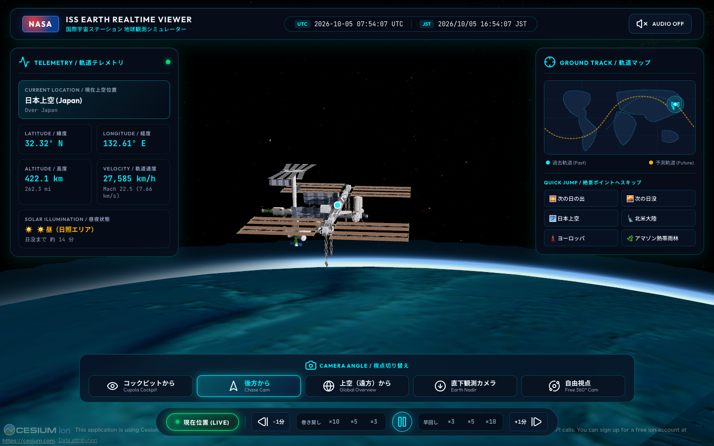
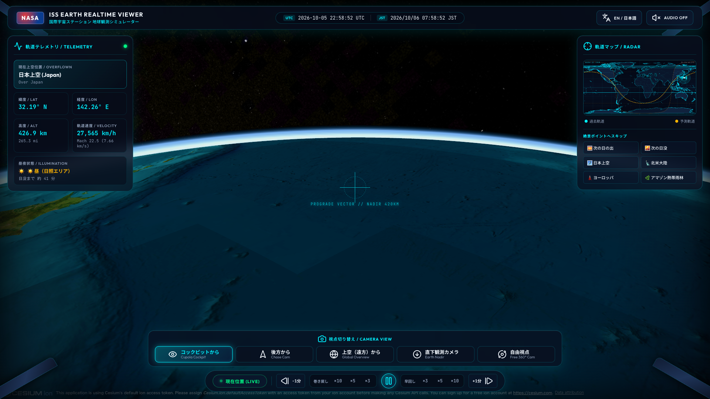
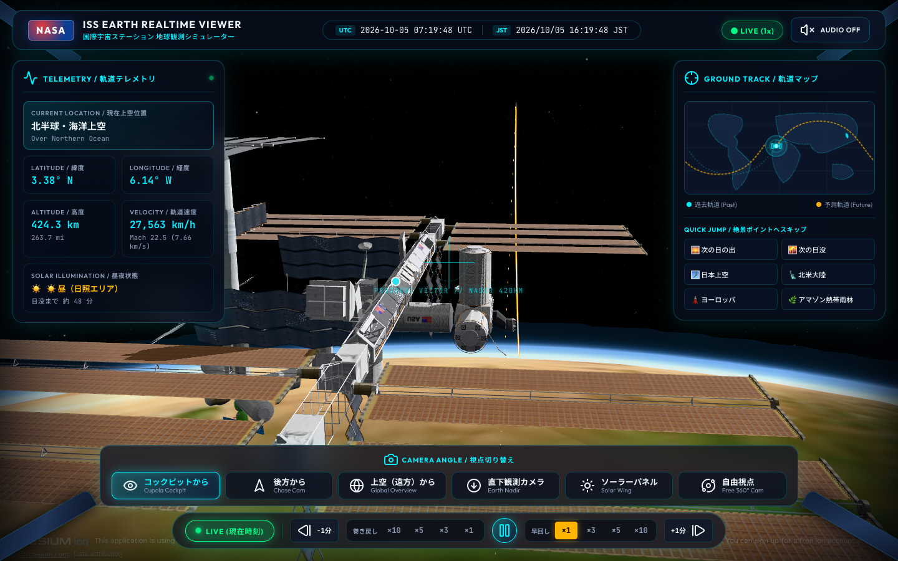
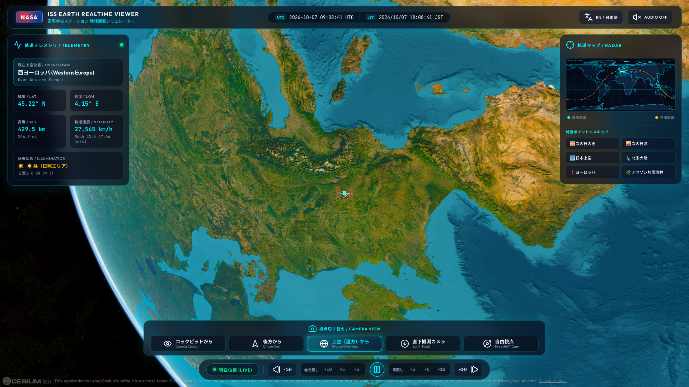
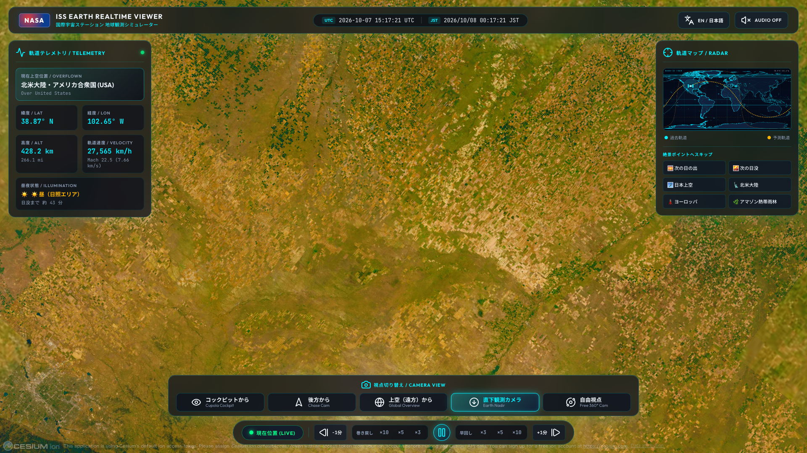
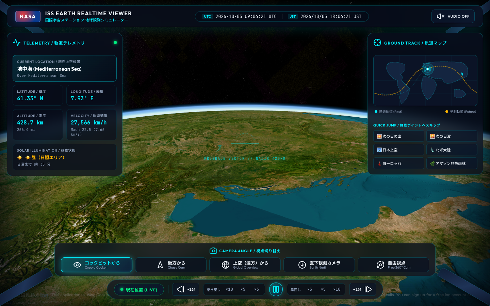
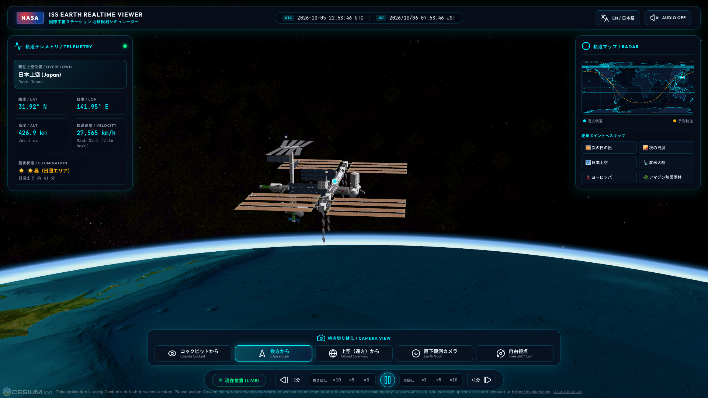

高度420kmを秒速7.65kmで周回するISSの視点をリアルタイムに3Dシミュレーション。コックピット視点、後方カメラ、高精度2D軌道マップ、早回し・巻き戻し機能で未知の地球を旅する。

NASAやNORADの公開データと物理モデルを組み合わせ、宇宙飛行士と同じ視界を提供します。
CelesTrak から最新の TLE（2行軌道要素）を取得し、秒速 7.65km で周回する ISS の現在位置と姿勢をミリ秒単位で高精度計算。
太陽直下点と地球の影（エクリプス）を算出。昼側の大気光と夜側の NASA VIIRS 高解像度都市光を忠実にシミュレート。
Natural Earth 50m ベクター海岸線と国境線を描画。地上可視範囲（フットプリント）や過去・未来の軌道曲線を直感的に把握。
×3, ×5, ×10 の早送りや巻き戻しで、約92.8分の地球1周軌道をわずか数分で体験。LIVEボタンで瞬時に現在時刻へ同期可能。
直近の「軌道上の日の出」「日没」、および今後24時間以内で最も日本や北米、欧州、アマゾンに接近する時刻を自動計算してジャンプ。
ワンクリックで全テレメトリやUIの言語を瞬時に切り替え。世界中のユーザーがストレスなく利用可能です。
キューポラ観測モジュールや船体追尾カメラなど、多彩なアングルで地球の表情を堪能できます。
宇宙飛行士が眺める進行方向と水平線
巨大な太陽電池パドルと地球の共演
高度3,000kmからの壮大な地球全景
地表・山脈・サンゴ礁・夜景を高解像度観測
漆黒の地球に煌めく大都市の夜景





Natural Earth 50m スケールの精細なベクター海岸線と国境線上に、ISS の軌道曲線と昼夜境界線をリアルタイム描画します。

Tauri v2 による超軽量・高速設計。買い切り ¥150 で永久にご利用いただけます。